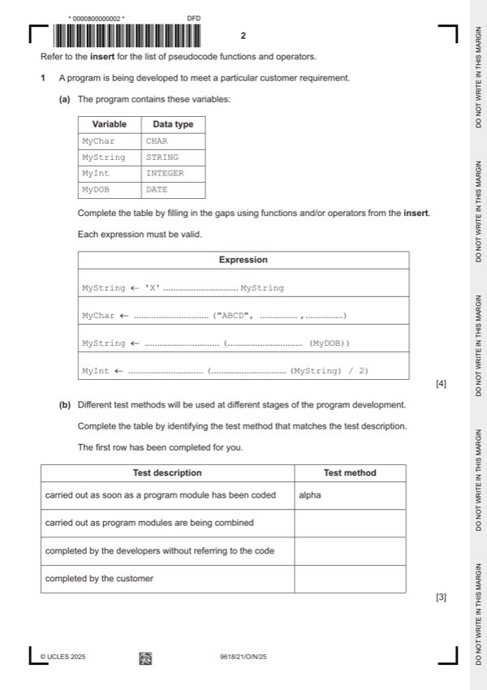

Question 1

Original paper page 2
Part 1(a) — solution
Answer: 4
4
Expression
MyString 'X' & MyString
MyChar MID ("ABCD", 1 / 2 / 3 / 4 , 1)
MyString NUM_TO_STR (DAY / MONTH / YEAR / DAYINDEX
(MyDOB))
MyInt INT(LENGTH(MyString) / 2)
One mark per row
Mark points
- Correct result: 4
Part 1(b) — solution
Answer: 3
3
Test description Test method
carried out as soon as a program module has been alpha
coded
carried out as program modules are being integration
combined
completed by the developers without referring to black-box
the code
completed by the customer acceptance / beta
One mark per row (2 to 4)
Mark points
- Correct result: 3
Part 1(c) — solution
One mark per point: 3
Mark points
- Include the ideas shown in the solution above.
Part 1 — solution
Initialisation of variables used as array index and count
Mark points
- Include the ideas shown in the solution above.
Part 1 — solution
One mark for TYPE RentalRecord and ENDTYPE statements
Mark points
- Include the ideas shown in the solution above.
Part 1 — solution
Different data types held (for each rental) under a single identifier
Mark points
- Include the ideas shown in the solution above.
Part 1 — solution
Declare local variables Index as integer, ThisNum and LastNum as real
Mark points
- Include the ideas shown in the solution above.
Part 1 — solution
Declare local variables Index as integer, ThisNum and LastNum as real
Mark points
- Include the ideas shown in the solution above.
Part 1 — solution
The amount of values stored (in a text file) is not fixed / not limited
(other than by secondary storage available) //
The amount values stored is not limited to the size of the array
Mark points
- Include the ideas shown in the solution above.
Part 1 — solution
Function heading, parameters return type and ending
Mark points
- Include the ideas shown in the solution above.
Part 1 — solution
Function heading, parameters return type and ending
Mark points
- Include the ideas shown in the solution above.
Part 1 — solution
- [A1] | X1 added on line from S1 to state labelled S2
Mark points
- [A1] | X1 added on line from S1 to state labelled S2
Part 1 — solution
Store date due back as a new data item / in the loan record
Mark points
- Include the ideas shown in the solution above.